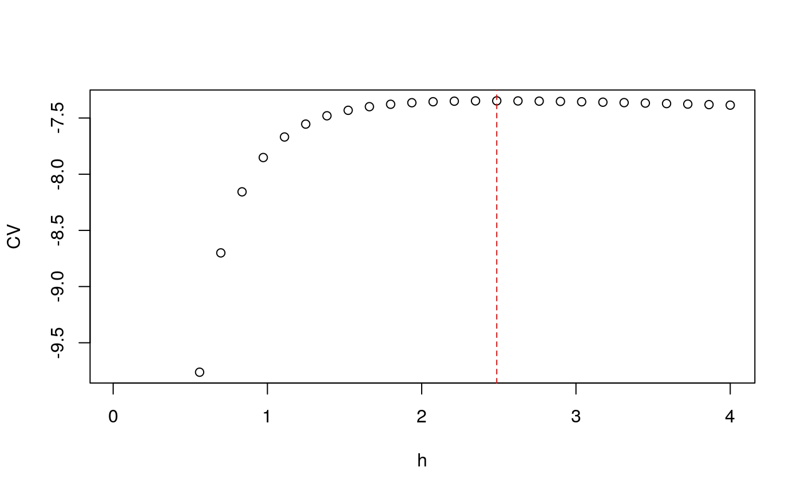

R/LIK.density.R, R/LSCV.density.R
CV.RdIsotropic fixed or global (for adaptive) bandwidth selection for standalone 2D density/intensity based on either unbiased least squares cross-validation (LSCV) or likelihood (LIK) cross-validation.
LIK.density(pp, hlim = NULL, hseq = NULL, resolution = 64, edge = TRUE, auto.optim = TRUE, type = c("fixed", "adaptive"), seqres = 30, parallelise = NULL, zero.action = 0, verbose = TRUE, ...) LSCV.density(pp, hlim = NULL, hseq = NULL, resolution = 64, edge = TRUE, auto.optim = TRUE, type = c("fixed", "adaptive"), seqres = 30, parallelise = NULL, zero.action = 0, verbose = TRUE, ...)
| pp | An object of class |
|---|---|
| hlim | An optional vector of length 2 giving the limits of the optimisation routine with respect to the bandwidth. If unspecified, the function attempts to choose this automatically. |
| hseq | An optional increasing sequence of bandwidth values at which to
manually evaluate the optimisation criterion. Used only in the case
|
| resolution | Spatial grid size; the optimisation will be based on a
[ |
| edge | Logical value indicating whether to edge-correct the density estimates used. |
| auto.optim | Logical value indicating whether to automate the numerical
optimisation using |
| type | A character string; |
| seqres | Optional resolution of an increasing sequence of bandwidth
values. Only used if |
| parallelise | Numeric argument to invoke parallel processing, giving
the number of CPU cores to use when |
| zero.action | A numeric integer, either |
| verbose | Logical value indicating whether to provide function progress commentary. |
| ... | Additional arguments controlling pilot density estimation and multi-scale bandwidth-axis
resolution when |
A single numeric value of the estimated bandwidth (if
auto.optim = TRUE). Otherwise, a \([\)seqres \(x\) 2\(]\) matrix
giving the bandwidth sequence and corresponding CV
function value.
This function implements the bivariate, edge-corrected versions of fixed-bandwidth least squares cross-validation and likelihood cross-validation
as outlined in Sections 3.4.3 and 3.4.4 of Silverman (1986) in order to select an optimal fixed smoothing bandwidth. With type = "adaptive" it may also be used to select the global bandwidth
for adaptive kernel density estimates, making use of multi-scale estimation (Davies and Baddeley, 2018) via multiscale.density.
Note that for computational reasons, the leave-one-out procedure is not performed on the pilot density in the adaptive setting; it
is only performed on the final stage estimate. Current development efforts include extending this functionality, see SLIK.adapt. See also `Warning' below.
Where LSCV.density is based on minimisation of an unbiased estimate of the mean integrated squared error (MISE) of the density, LIK.density is based on
maximisation of the cross-validated leave-one-out average of the log-likelihood of the density estimate with respect to \(h\).
In both functions, the argument zero.action can be used to control the level of severity in response to small bandwidths that result (due to numerical error) in at least one density value being zero or less.
When zero.action = -1, the function strictly forbids bandwidths that would result in one or more pixel values of a kernel estimate of the original data (i.e. anything over the whole region) being zero or less---this is the most restrictive truncation. With zero.action = 0 (default), the function
automatically forbids bandwidths that yield erroneous values at the leave-one-out data point locations only. With zero.action = 1, the minimum machine value (see .Machine$double.xmin at the prompt) is
used to replace these individual leave-one-out values. When zero.action = 2, the minimum value of the valid (greater than zero) leave-one-out values is used to replace any erroneous leave-one-out values.
Leave-one-out CV for bandwidth selection in kernel
density estimation is notoriously unstable in practice and has a tendency to
produce rather small bandwidths, particularly for spatial data. Satisfactory bandwidths are not guaranteed
for every application; zero.action can curb adverse numeric effects for very small bandwidths during the optimisation procedures. This method can also be computationally expensive for
large data sets and fine evaluation grid resolutions. The user may also need to
experiment with adjusting hlim to find a suitable minimum.
Davies, T.M. and Baddeley A. (2018), Fast computation of spatially adaptive kernel estimates, Statistics and Computing, 28(4), 937-956.
Silverman, B.W. (1986), Density Estimation for Statistics and Data Analysis, Chapman & Hall, New York.
Wand, M.P. and Jones, C.M., 1995. Kernel Smoothing, Chapman & Hall, London.
SLIK.adapt and functions for bandwidth selection in package
spatstat: bw.diggle;
bw.ppl; bw.scott;
bw.frac.
data(pbc) pbccas <- split(pbc)$case LIK.density(pbccas)#> Searching for optimal h in [0.0999999999999091, 15.2778333333333]...Done.#> [1] 2.465722LSCV.density(pbccas)#> Searching for optimal h in [0.0999999999999091, 15.2778333333333]...Done.#> [1] 0.4277125#* FIXED # custom limits LIK.density(pbccas,hlim=c(0.01,4))#> Searching for optimal h in [0.01, 4]...Done.#> [1] 2.465704LSCV.density(pbccas,hlim=c(0.01,4))#> Searching for optimal h in [0.01, 4]...Done.#> [1] 0.4277527# disable edge correction LIK.density(pbccas,hlim=c(0.01,4),edge=FALSE)#> Searching for optimal h in [0.01, 4]...Done.#> [1] 2.245576LSCV.density(pbccas,hlim=c(0.01,4),edge=FALSE)#> Searching for optimal h in [0.01, 4]...Done.#> [1] 0.4277527# obtain objective function hcv <- LIK.density(pbccas,hlim=c(0.01,4),auto.optim=FALSE)#> ================================================================================plot(hcv);abline(v=hcv[which.max(hcv[,2]),1],lty=2,col=2)#* ADAPTIVE LIK.density(pbccas,type="adaptive")#> Selecting pilot bandwidth...Done. #> [ Found hp = 0.427712498752032 ] #> Computing multi-scale estimate...Done. #> Searching for optimal h0 in [0.105866014203302, 13.7203855365642]...Done.#> [1] 4.221678LSCV.density(pbccas,type="adaptive")#> Selecting pilot bandwidth...Done. #> [ Found hp = 0.427712498752032 ] #> Computing multi-scale estimate...Done. #> Searching for optimal h0 in [0.105866014203302, 13.7203855365642]...Done.#> [1] 3.681714# change pilot bandwidth used LIK.density(pbccas,type="adaptive",hp=2)#> Computing multi-scale estimate...Done. #> Searching for optimal h0 in [0.110042177698085, 13.648838390479]...Done.#> [1] 2.223937LSCV.density(pbccas,type="adaptive",hp=2)#> Computing multi-scale estimate...Done. #> Searching for optimal h0 in [0.110042177698085, 13.648838390479]...Done.#> [1] 2.145645